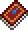
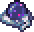

Magicians are fragile but highly varied in attack style, often utilizing special mechanics such as homing, lifesteal, and area-of-effect damage. They are held back by reliance on mana, which regenerates very slowly unless the Mana Regeneration buff is in effect. Mana becomes less of a problem as the player progresses, as they obtain helpful Armors and Accessories such as the Mana Flower. Enemies also have a high chance to drop mana when killed by a player with less than full Mana, which proves useful in situations with lots of enemies where they'll end up using lots of mana. Magic-users must craft or purchase mana potionsif they wish to recover mana instantly.
Mage has also some subclasses wich is fun to play as challange
- Wizard 
- Only spells from books can apply to this class. Due to the extremely limited variety of tomes, even with mods, this makes the subclass a harsh endurance test. Not recommended to those who rely on variation and not being squishy.
- Sorcerer 
- Being limited to staves still grants this subclass far more options than its counterpart, as well as access to the Nebula Arcanum and Nebula Blaze. This allows it to easily rival all of the ranged subclasses, except for mana conservation.